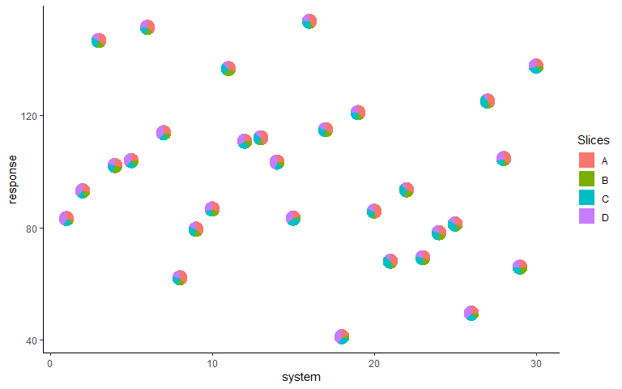
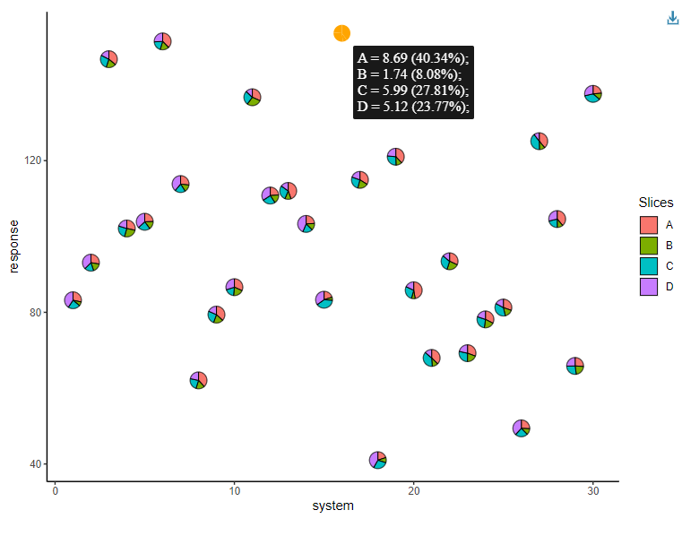

PieGlyph is an R package aimed at replacing points in a plot with pie-charts glyphs, showing the relative proportions of different categories. The pie-chart glyphs are invariant to the axes and plot dimensions to prevent distortions when the plot dimensions are changed.
Installation
You can install the released version of PieGlyph from CRAN by running:
Alternatively, you can install the development version of PieGlyph from GitHub with:
Example
Create plot
ggplot(data = plot_data, aes(x = system, y = response))+
geom_pie_glyph(slices = c("A", "B", "C", "D"))+
theme_minimal()
Alternative specification
The attributes can also be stacked into one column to generate the plot. This variant of the function is useful for situations when the data is in tidy format. See vignette('tidy-data') and vignette('pivot') for more information.
Stack the attributes in one column
plot_data_stacked <- plot_data %>%
pivot_longer(cols = c("A", "B", "C", "D"),
names_to = "Attributes",
values_to = "values")
head(plot_data_stacked, 8)
#> # A tibble: 8 × 5
#> response system group Attributes values
#> <dbl> <int> <chr> <chr> <dbl>
#> 1 83.2 1 G1 A 5.8
#> 2 83.2 1 G1 B 1.57
#> 3 83.2 1 G1 C 4.78
#> 4 83.2 1 G1 D 8.31
#> 5 93.1 2 G3 A 6.07
#> 6 93.1 2 G3 B 3.76
#> 7 93.1 2 G3 C 3.87
#> 8 93.1 2 G3 D 8.21
Interactive pie-chart glyphs
It is also possible to create interactive pie-chart scatterplots using the geom_pie_interactive function via the ggiraph framework.
Hovering over a pie-chart glyph will show a tooltip containing information about the raw counts and percentages of the categories (system attributes in this example) shown in the pie-charts. All additional features by ggiraph are also supported. See the ggiraph book and vignette("interactive-pie-glyphs") for more information.
plot_obj <- ggplot(data = plot_data)+
geom_pie_interactive(aes(x = system, y = response,
data_id = system),
slices = c("A", "B", "C", "D"),
colour = "black")+
theme_classic()
girafe(ggobj = plot_obj, height_svg = 6, width_svg = 8)